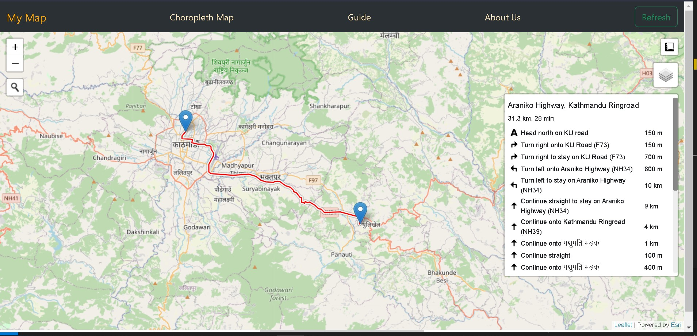
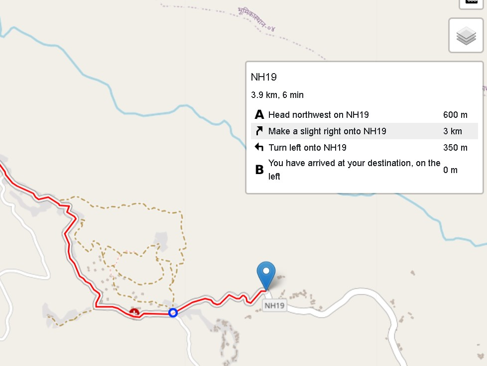
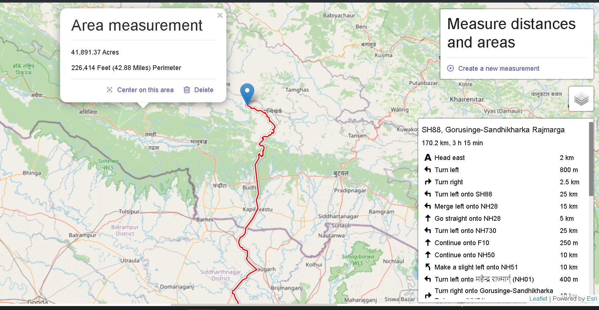
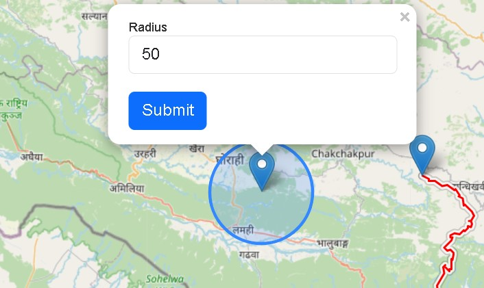
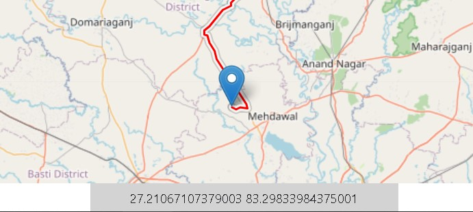
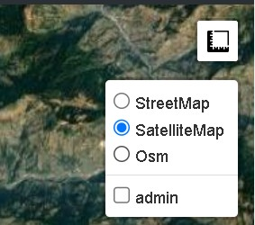

Getting Started
Welcome to our cutting-edge web mapping project, meticulously crafted to deliver a suite of sophisticated spatial tools for an enriched user experience and advanced geospatial analysis. This comprehensive web map encompasses a range of features, including seamless navigation for route planning, precise area calculations facilitated by an intuitive polygon creation tool, and immersive satellite imagery mapping. Users can delve into high-resolution satellite imagery, gaining a detailed perspective of the geographic landscape, while also benefiting from a detailed street map for location awareness in urban planning or transportation analysis. Additionally, our platform offers a choropleth map functionality for visualizing data patterns and trends across geographic regions. This powerful tool enhances the interpretation and analysis of spatial data, catering to the needs of urban planners, researchers, and enthusiasts alike. Designed to be a user-friendly yet powerful solution, our web map aims to empower users with the tools necessary for effective spatial analysis and informed decision-making. Embark on a journey of discovery and innovation in the realm of spatial technologies as you explore the endless possibilities offered by our web map.
My Map
Search Bar

The search bar enables you to search for the desired location and places. It also recommends related places.
Routing

By placing the markers to two ends of our location and destinations, it shows the route with directions and distace.
While hovering and selecting any of the location i.e. middle joint of route, it shows with a blue circle mark as shown in the image.

Area and Distance Measurement

This helps to measure the area of the given polygon. Also the distance between points can be measured and is desplayed.
Marker and Radius

Markers can be added by clicking on the location over the map layer. Also the radius can be given as input to display the circle of that radius around the location marked with an marker.
Co-Ordinate Display

When hovered over the map, it desplayes the coordinate in the buttom of the page.
Map layer selection

Different satellite images and maps can be selected as layers over the map.